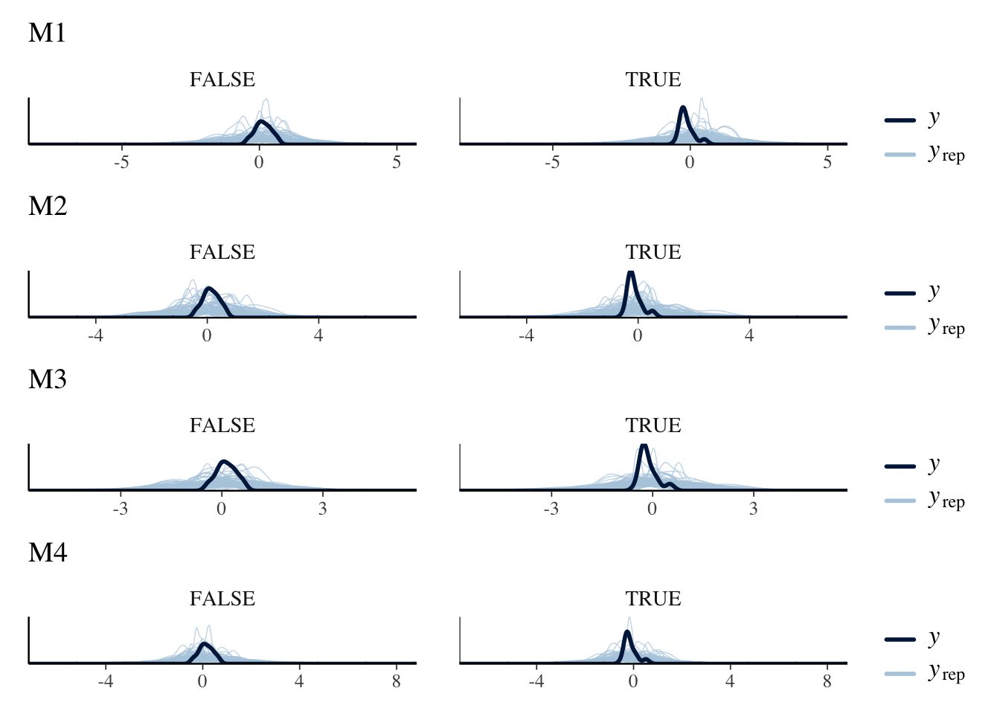
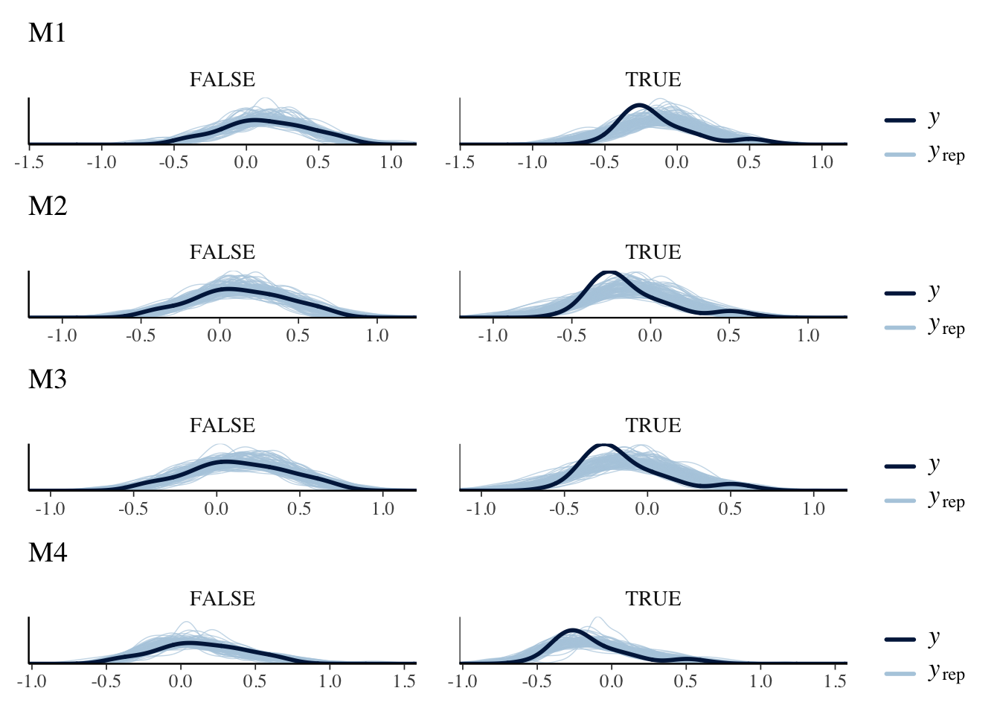
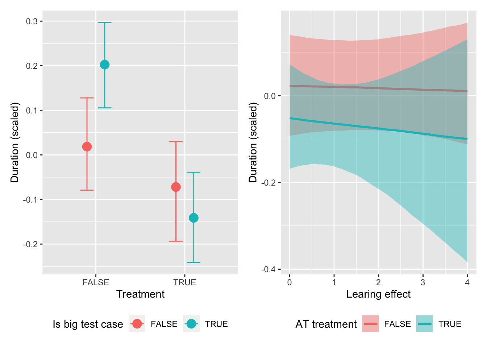

This document contains the analysis of the effect of augmented testing on the relative duration for GUI testing.
Causal Assumptions
Hypotheses
We formulate the following hypotheses based on our prior knowledge:
The use of augmented testing has an influence on the relative duration for GUI testing.
The size of a test case has an influence on the relative duration for GUI testing.
Additionally, we need to consider that the repeated use of the augmented testing system has an influence on the relative duration for GUI testing (learning effect).
Directed Acyclic Graph
We can visualize these hypotheses in the following graph:
Finally, add the learning variable: because the order of the test cases was the same for all participants, there is a potential learning effect in using AT. Hence, determine the number of previous test cases in which augmented testing has already been used to represent the learning effect.
# determine the group of participants which obtained the treatment first, i.e., all with an even IDgroup.treatment.first <-seq(2, max(df$ID), 2)# for each of the two groups, determine the "number of previous test cases employing augmenting testing"df <- df %>%mutate(at.learned =ifelse( ID %in% group.treatment.first,ifelse(tc %in%c(1, 3, 5, 7), (as.integer(tc) -1) /2, 4),ifelse(tc %in%c(4, 6, 8), (as.integer(tc) -2) /2, 0)) )
First, we define our models by (1) representing our DAG - i.e., the assumed causal relationships within our data - in a formula, and (2) selecting an appropriate distribution. In this analysis, we will compare the following models, which are further explained below:
ID
Distribution
Interaction
Learning
F
m1
Gaussian
no
no
f1
m2
Gaussian
yes
no
f2
m3
Gaussian
yes
yes
f3
m4
Skew_normal
yes
yes
f3
For each formula, we can obtain a list of prior parameters which need to be defined later on via brms::get_prior.
The model m1 simply assumes an influence of the treatment and the test case size (tc_big) on the duration_scaled.
f1 <- duration_scaled ~ treatment + tc_bigbrms::get_prior(f1, family = gaussian, data = df)
prior class coef group resp dpar nlpar lb ub
(flat) b
(flat) b tc_bigTRUE
(flat) b treatmentTRUE
student_t(3, 0, 2.5) Intercept
student_t(3, 0, 2.5) sigma 0
source
default
(vectorized)
(vectorized)
default
default
The model m2 additionally assumes an interaction effect between the two predictors.
f2 <- duration_scaled ~ treatment * tc_bigbrms::get_prior(f2, family = gaussian, data = df)
prior class coef group resp dpar nlpar
(flat) b
(flat) b tc_bigTRUE
(flat) b treatmentTRUE
(flat) b treatmentTRUE:tc_bigTRUE
student_t(3, 0, 2.5) Intercept
student_t(3, 0, 2.5) sigma
lb ub source
default
(vectorized)
(vectorized)
(vectorized)
default
0 default
The model m3 additionally assumes a learning effect which occurs as an interaction between the treatment and the number of test cases already processed using augmented testing (at.learned). The hypothesis is that the more often a subject has used the augmented testing system, the quicker they become (i.e., the lower the duration_scaled becomes).
f3 <- duration_scaled ~ treatment * tc_big + treatment * at.learnedbrms::get_prior(f3, family = gaussian, data = df)
prior class coef group resp dpar nlpar
(flat) b
(flat) b at.learned
(flat) b tc_bigTRUE
(flat) b treatmentTRUE
(flat) b treatmentTRUE:at.learned
(flat) b treatmentTRUE:tc_bigTRUE
student_t(3, 0, 2.5) Intercept
student_t(3, 0, 2.5) sigma
lb ub source
default
(vectorized)
(vectorized)
(vectorized)
(vectorized)
(vectorized)
default
0 default
The model m4 assumes that the response variable duration_scaled does not follow a Gaussian distribution, but rather a skewed Gaussian distribution. We derive this insight from the posterior predictive checks.
brms::get_prior(f3, familiy = skew_normal, data = df)
prior class coef group resp dpar nlpar
(flat) b
(flat) b at.learned
(flat) b tc_bigTRUE
(flat) b treatmentTRUE
(flat) b treatmentTRUE:at.learned
(flat) b treatmentTRUE:tc_bigTRUE
student_t(3, 0, 2.5) Intercept
student_t(3, 0, 2.5) sigma
lb ub source
default
(vectorized)
(vectorized)
(vectorized)
(vectorized)
(vectorized)
default
0 default
All of these models represent our DAG but with slightly different ontological assumptions. We will compare the predictive power of these models to determine, which of these models explains the data best.
Priors
Next, select sensible priors. We need to set priors for the Intercept, the slope b (or “beta”), and the standard deviation sigma.
priors <-c(prior(normal(0, 0.5), class = Intercept),prior(normal(0, 0.5), class = b),prior(weibull(2, 1), class = sigma))priors2 <-c(prior(normal(0, 0.3), class = Intercept),prior(normal(0, 0.3), class = b),prior(weibull(2, 1), class = sigma))
To assess the feasibility of the selected priors, sample from only the priors (i.e., avoid the Bayesian learning process for now) by setting sample_prior="only".
m1.prior <-brm(data = df, # provide the datafamily = gaussian, # determine the distribution type of the response variable (here: Gaussian)formula = f1, # provide the formulaprior = priors, # provide the priorsiter =4000, warmup =1000, chains =4, cores =4, seed =4, # brms settingssample_prior ="only", # do not train the parameters, sample only from the priors,file ="fits/m1.prior"# save the fit in a file)
With the competing models defined and sampled from the priors, we can perform a graphical prior predictive check by visualizing the sampled values against the actually observed values.
m1.priorpc <- brms::pp_check(m1.prior, type ="dens_overlay_grouped", ndraws =100, group ="treatment") + ggplot2::ggtitle("M1")m2.priorpc <- brms::pp_check(m2.prior, type ="dens_overlay_grouped", ndraws =100, group ="treatment") + ggplot2::ggtitle("M2")m3.priorpc <- brms::pp_check(m3.prior, type ="dens_overlay_grouped", ndraws =100, group ="treatment") + ggplot2::ggtitle("M3")m4.priorpc <- brms::pp_check(m4.prior, type ="dens_overlay_grouped", ndraws =100, group ="treatment") + ggplot2::ggtitle("M4")m1.priorpc / m2.priorpc / m3.priorpc / m4.priorpc

We expect that the sampled values (\(y_{rep}\)) are close to the actually observed values (\(y\)), which confirms that the actual data is realistic in the eyes of the model given its prior believes.
Training
With sufficiently sensitive priors, we can train the model on the actual data. For this, we remove the sample_prior="only" argument. Instead, we add the file=fits/m1 argument such that the trained model will be saved in the “fits” folder within the “src” folder (make sure that this folder already exists).
To confirm that the training was successful, we can perform a graphical posterior predictive check similar to the prior predictive check, but this time sampling from the actually trained models
m1.postpc <- brms::pp_check(m1, type ="dens_overlay_grouped", ndraws =100, group ="treatment") + ggplot2::ggtitle("M1")m2.postpc <- brms::pp_check(m2, type ="dens_overlay_grouped", ndraws =100, group ="treatment") + ggplot2::ggtitle("M2")m3.postpc <- brms::pp_check(m3, type ="dens_overlay_grouped", ndraws =100, group ="treatment") + ggplot2::ggtitle("M3")m4.postpc <- brms::pp_check(m4, type ="dens_overlay_grouped", ndraws =100, group ="treatment") + ggplot2::ggtitle("M4")m1.postpc / m2.postpc / m3.postpc / m4.postpc

The visualizations confirm that the parameters of the trained model imply distributions very close to the actually observed values, but only model m4 accommodates the skeweness that the values for treatment = TRUE imply.
Model Comparison
To determine, which of the two formulas (and, hence, which of the two models) fit the data better, we can perform a leave-one-out comparison.
The model m4 clearly outperforms all other models, which is visible through its \(elpd\_diff\) value of 0.0, while all other models perform significantly worse. Model m4 hence has the best predictive power and will be used to move forward.
Evaluation
We can evaluate the best-fitting model to infer insights about the impact of the modeled predictors.
Parameters
First, we can take a look at the parameters, which are the priors updated based on the observed data.
summary(m4)
Family: skew_normal
Links: mu = identity; sigma = identity; alpha = identity
Formula: duration_scaled ~ treatment * tc_big + treatment * at.learned
Data: df (Number of observations: 104)
Draws: 4 chains, each with iter = 4000; warmup = 1000; thin = 1;
total post-warmup draws = 12000
Population-Level Effects:
Estimate Est.Error l-95% CI u-95% CI Rhat Bulk_ESS
Intercept 0.02 0.06 -0.09 0.14 1.00 7616
treatmentTRUE -0.07 0.08 -0.23 0.08 1.00 7048
tc_bigTRUE 0.18 0.07 0.04 0.31 1.00 6132
at.learned -0.00 0.02 -0.04 0.04 1.00 6837
treatmentTRUE:tc_bigTRUE -0.25 0.10 -0.44 -0.04 1.00 5181
treatmentTRUE:at.learned -0.01 0.05 -0.11 0.07 1.00 4579
Tail_ESS
Intercept 8843
treatmentTRUE 7390
tc_bigTRUE 7286
at.learned 6864
treatmentTRUE:tc_bigTRUE 7856
treatmentTRUE:at.learned 6509
Family Specific Parameters:
Estimate Est.Error l-95% CI u-95% CI Rhat Bulk_ESS Tail_ESS
sigma 0.29 0.02 0.25 0.33 1.00 8334 8457
alpha 4.17 2.13 0.73 9.14 1.00 4483 5058
Draws were sampled using sampling(NUTS). For each parameter, Bulk_ESS
and Tail_ESS are effective sample size measures, and Rhat is the potential
scale reduction factor on split chains (at convergence, Rhat = 1).
We see the following effects:
A mostly negative distribution of treatmentTRUE (“mostly negative” meaning that the most of the 95% confidence interval is negative), which means that employing augmented testing is predominantly associated with a scaled_duration value below 0, i.e., below the average for that test case.
A strongly positive distribution of tc_bigTRUE, meaning that larger test cases tend to have a longer-than-average time for testing.
A strongly negative distribution of treatmentTRUE:tc_bigTRUE, meaning that when a test case is large, the usage of augmented testing reduces the testing duration even stronger.
A negligibly negative distribution of treatmentTRUE:at.learned, meaning that the the learning effect coinciding with the treatment very slightly reduces the scaled duration.
These are the interpretations of the raw parameters which do not account for all of the uncertainty which the model has picked up, but isolate the effect of the considered predictors.
Marginal and Conditional effects
A more sophisticated evaluation uses plots of marginal and conditional effects.
eff <-conditional_effects(m4)
Marginal effects
Marginal effects represent the isolated effect of a predictor while fixing all other predictors at an average (mean or mode) level.
In our case, it visualizes both the effects but also the uncertainty of the impact of each individual predictor.
Conditional effects
Conditional effects visualize the interaction between two predictor variables. In the currently evaluated model, we have two interaction effects to look into:
The interaction between the treatment and the test case size (treatment * tc_big)
The interaction between the treatment and the learning effect (treatment * at.learned)
conditional.effect.treatment <-plot(eff, plot =FALSE)[[4]] +theme(legend.position ="bottom") +labs(x ="Treatment", y ="Duration (scaled)", fill ="Is big test case", color ="Is big test case")conditional.effect.learning <-plot(eff, plot =FALSE)[[5]] +theme(legend.position ="bottom") +labs(x ="Learing effect", y ="Duration (scaled)", fill ="AT treatment", color ="AT treatment")conditional.effect.treatment | conditional.effect.learning

quartz_off_screen
2
quartz_off_screen
2
The visualizations show the following:
Larger test cases benefit much stronger from the use of augmented testing than smaller test cases: when comparing the distributions for treatment=FALSE vs treatment=TRUE, the distance between the two means is much bigger for tc_big=TRUE than tc_big=FALSE.
The repeated use of augmented testing is slightly beneficial in terms of efficiency, as the effect of at.learned is more negative (i.e., reduced duration_scaled more) when treatment=TRUE than when treatment=FALSE.
The second interaction effect is fairly trivial: getting used to the augmented testing system (Scout) has a stronger effect on effectiveness when using augmented testing than when not using it. But even if this insight is trivial, it shows us that the expected learning effect is present in the data and modeling it makes the other predictors more precise by explaining at least this fraction of the effect on the response variable by the learning effect.
Sampling from the Posterior
Finally, to account for all of the uncertainty of the model, we can sample from the posterior. For this, we perform the following steps:
Define a new datagrid in which we fix all predictors. In our case, we once set the treatment to TRUE and once to FALSE. In both cases, we want an even distribution of the other predictor, tc_big (hence, we set it to c(TRUE, FALSE)).
Sample from the model given both new datagrids.
Compare the two samples by subtracting the resulting, sampled duration_scaled values from each other (diff), only keep the sign (i.e., + or -) of the difference (sign), and count, how often the sampled duration_scaled value from treatment=TRUE-sample was greater than from the treatment=FALSE-sample (table).
Finally, we output those counts divided by the total amount, i.e., the percentage.
This means, that - accounting for all uncertainty that the model picked up and under equal distribution of test case size - the use of augmented testing on average results in shorter test duration in about 70% of all cases.